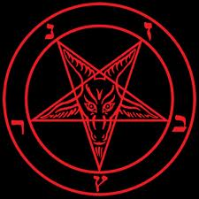
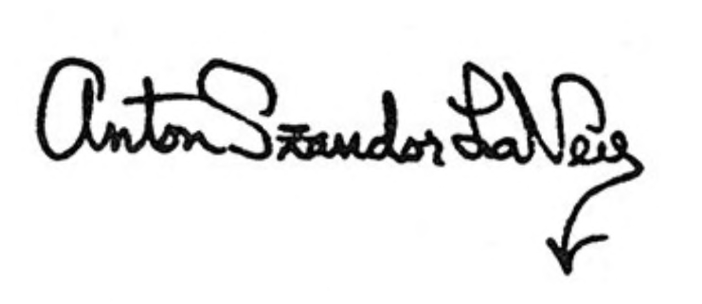

THE SATANIC BIBLE
Anton Szandor LaVey
Copyright © 2014 All rights reserved
ISBN: 978-1-312-42280-3
This work is licensed under GNU General Public License
PREFACE
This book was written because, with very few exceptions, every tract and paper, every "secret" grimoire, all the "great works" on the subject of magic, are nothing more than sanctimonious fraud - guilt-ridden ramblings and esoteric gibberish by chroniclers of magical lore unable or unwilling to present an objective view of the subject. Writer after writer, in efforts to state the principles of "white and black magic", has succeeded instead in clouding the entire issue so badly that the would-be student of sorcery winds up stupidly pushing a planchette over a Ouija board, standing inside a pentagram waiting for a demon to present itself, limply tossing I-Ching yarrow stalks like so many stale pretzels, shuffling pasteboards to foretell a future which has lost any meaning, attending seminars guaranteed to flatten his ego - while doing the same to his wallet - and in general making a blithering fool of himself in the eyes of those who know!
The true magus knows that occult bookshelves abound with the brittle relics of frightened minds and sterile bodies, metaphysical journals of self-deceit, and constipated rule-books of Eastern mysticism. Far too long has the subject of Satanic magic and philosophy been written down by wild-eyed journalists of the right-hand path.
The old literature is the by-product of brains festering with fear and defeat, written unknowingly for the assistance of those who really rule the earth, and who, from their Hellish thrones, laugh with noisome mirth.
The flames of Hell burn brighter for the kindling supplied by these volumes of hoary misinformation and false prophecy.
Herein you will find truth—and fantasy. Each is necessary for the other to exist; but each must be recognized for what it is. What you see may not always please you; but you will see!
Here is Satanic thought from a truly Satanic point of view.
The Church of Satan
San Francisco, Walpurgisnacht 1968
PROLOGUE
The gods of the right‐hand path have bickered and quarreled for an entire age of earth. Each of these deities and their respective priests and ministers have attempted to find wisdom in their own lies. The ice age of religious thought can last but a limited time in this great scheme of human existence. The gods of wisdom‐defiled have had their saga, and their millennium hath become as reality. Each, with his own “divine” path to paradise, hath accused the other of heresies and spiritual indiscretions. The Ring of the Nibelungen doth carry an everlasting curse, but only because those who seek it think in terms of “Good” and “Evil”—themselves being at all times “Good.” The gods of the past have become as their own devils in order to live. Feebly, their ministers play the devil’s game to fill their tabernacles and pay the mortgages on their temples. Alas, too long have they studied “righteousness,” and poor and incompetent devils they make. So they all join hands in “brotherly” unity, and in their desperation go to Valhalla for their last great ecumenical council. “Draweth near in the gloom the twilight of the gods.” The ravens of night have flown forth to summon Loki, who hath set Valhalla aflame with the searing trident of the Inferno. The twilight is done. A glow of new light is borne out of the night and Lucifer is risen, once more to proclaim: “This is the age of Satan! Satan Rules the Earth!” The gods of the unjust are dead. This is the morning of magic, and undefiled wisdom. The FLESH prevaileth and a great Church shall be builded, consecrated in its name. No longer shall man’s salvation be dependent on his self-denial. And it will be known that the world of the flesh and the living shall be the greatest preparation for any and all eternal delights!
REGIE SATANAS!
AVE SATANAS!
HAIL SATAN!
THE NINE SATANIC STATEMENTS

- Satan represents indulgence, instead of abstinence!
- Satan represents vital existence, instead of spiritual pipe dreams!
- Satan represents undefiled wisdom, instead of hypocritical self‐deceit!
- Satan represents kindness to those who deserve it, instead of love wasted on ingrates!
- Satan represents vengeance, instead of turning the other cheek!
- Satan represents responsibility to the responsible, instead of concern for psychic vampires!
- Satan represents man as just another animal, sometimes better, more often worse than those that walk on all‐fours, who, because of his “divine spiritual and intellectual development,” has become the most vicious animal of all!
- Satan represents all of the so‐called sins, as they all lead to physical, mental, or emotional gratification!
- Satan has been the best friend the church has ever had, as he has kept it in business all these years!
(FIRE) - THE BOOK OF SATAN
THE INFERNAL DIATRIBE
The first book of the Satanic Bible is not an attempt to blaspheme as much as it is a statement of what might be termed “diabolical indignation.” The Devil has been attacked by the men of God relentlessly and without reservation. Never has there been an opportunity, short of fiction, for the Dark Prince to speak out in the same manner as the spokesmen of the Lord of the Righteous. The pulpit‐pounders of the past have been free to define “good” and “evil” as they see fit, and have gladly smashed into oblivion any who disagree with their lies—both verbally and, at times, physically. Their talk of “charity,” when applied to His Infernal Majesty, becomes an empty sham — and most unfairly, too, considering the obvious fact that without their Satanic foe their very religions would collapse. How sad, that the allegorical personage most responsible for the success of spiritual religions is shown the least amount of charity and the most consistent abuse — and by those who most unctuously preach the rules of fair play! For all the centuries of shouting‐down the Devil has received, he has never shouted back at his detractors. He has remained the gentleman at all times, while those he supports rant and rave. He has shown himself to be a model of deportment, but now he feels it is time to shout back. He has decided it is finally time to receive his due. Now the ponderous rule‐books of hypocrisy are no longer needed. In order to relearn the Law of the Jungle, a small, slim diatribe will do. Each verse is an inferno. Each word is a tongue of fire. The flames of Hell burn fierce . . . and purify! Read on and learn the Law.
THE BOOK OF SATAN I
- In this arid wilderness of steel and stone I raise up my voice that you may hear. To the East and to the West I beckon. To the North and to the South I show a sign proclaiming: Death to the weakling, wealth to the strong!
- Open your eyes that you may see, Oh men of mildewed minds, and listen to me ye bewildered millions!
- For I stand forth to challenge the wisdom of the world; to interrogate the “laws” of man and of “God”!
- I request reason for your golden rule and ask the why and wherefore of your ten commandments.
- Before none of your printed idols do I bend in acquiescence, and he who saith “thou shalt” to me is my mortal foe!
- I dip my forefinger in the watery blood of your impotent mad redeemer, and write over his thorn‐torn brow: The TRUE prince of evil — the king of slaves!
- No hoary falsehood shall be a truth to me; no stifling dogma shall encramp my pen!
- I break away from all conventions that do not lead to my earthly success and happiness.
- I raise up in stern invasion the standard of the strong!
- I gaze into the glassy eye of your fearsome Jehovah, and pluck him by the beard; I uplift a broad‐axe, and split open his worm‐eaten skull!
- I blast out the ghastly contents of philosophically whited sepulchers and laugh with sardonic wrath!
THE BOOK OF SATAN II
- Behold the crucifix; what does it symbolize? Pallid incompetence hanging on a tree.
- I question all things. As I stand before the festering and varnished facades of your haughtiest moral dogmas, I write thereon in letters of blazing scorn: Lo and behold; all this is fraud!
- Gather around me, Oh! ye death‐defiant, and the earth itself shall be thine, to have and to hold!
- Too long the dead hand has been permitted to sterilize living thought!
- Too long right and wrong, good and evil have been inverted by false prophets!
- No creed must be accepted upon authority of a “divine” nature. Religions must be put to the question. No moral dogma must be taken for granted — no standard of measurement deified. There is nothing inherently sacred about moral codes. Like the wooden idols of long ago, they are the work of human hands, and what man has made, man can destroy!
- He that is slow to believe anything and everything is of great understanding, for belief in one false principle is the beginning of all unwisdom.
- The chief duty of every new age is to upraise new men to determine its liberties, to lead it towards material success — to rend the rusty padlocks and chains of dead custom that always prevent healthy expansion. Theories and ideas that may have meant life and hope and freedom for our ancestors may now mean destruction, slavery, and dishonor to us!
- As environments change, no human ideal standeth sure!
- Whenever, therefore, a lie has built unto itself a throne, let it be assailed without pity and without regret, for under the domination of an inconvenient falsehood, no one can prosper.
- Let established sophisms be dethroned, rooted out, burnt and destroyed, for they are a standing menace to all true nobility of thought and action!
- Whatever alleged “truth” is proven by results to be but an empty fiction, let it be unceremoniously flung into the outer darkness, among the dead gods, dead empires, dead philosophies, and other useless lumber and wreckage!
- The most dangerous of all enthroned lies is the holy, the sanctified, the privileged lie the lie everyone believes to be a model truth. It is the fruitful mother of all other popular errors and delusions. It is a hydra‐headed tree of unreason with a thousand roots. It is a social cancer!!
- The lie that is known to be a lie is half eradicated, but the lie that even intelligent persons accept as fact — the lie that has been inculcated in a little child at its mother’s knee — is more dangerous to contend against than a creeping pestilence!!!
- Popular lies have ever been the most potent enemies of personal liberty. There is only one way to deal with them: Cut them out, to the very core, just as cancers. Exterminate them root and branch. Annihilate them, or they will us!
THE BOOK OF SATAN III
- “Love one another” it has been said is the supreme law, but what power made it so? Upon what rational authority does the gospel of love rest? Why should I not hate mine enemies — if I “love” them does that not place me at their mercy?
- Is it natural for enemies to do good unto each other — and WHAT IS GOOD?
- Can the torn and bloody victim “love” the blood‐splashed jaws that rend him limb from limb?
- Are we not all predatory animals by instinct? If humans ceased wholly from preying upon each other, could they continue to exist?
- Is not “lust and carnal desire” a more truthful term to describe “love” when applied to the continuance of the race? Is not the “love” of the fawning scriptures simply a euphemism for sexual activity, or was the “great teacher” a glorifier of eunuchs?
- Love your enemies and do good to them that hate and use you — is this not the despicable philosophy of the spaniel that rolls upon its back when kicked?
- Hate your enemies with a whole heart, and if a man smite you on one cheek, SMASH him on the other!; smite him hip and thigh, for self‐preservation is the highest law
- He who turns the other cheek is a cowardly dog!
- Give blow for blow, scorn for scorn, doom for doom — with compound interest liberally added thereunto! Eye for eye, tooth for tooth, aye four‐fold, a hundred-fold! Make yourself a Terror to your adversary, and when he goeth his way, he will possess much additional wisdom to ruminate over. Thus shall you make yourself respected in all the walks of life, and your spirit—your immortal spirit—shall live, not in an intangible paradise, but in the brains and sinews of those whose respect you have gained.
THE BOOK OF SATAN IV
- Life is the great indulgence — death, the great abstinence. Therefore, make the most of life — HERE AND NOW!
- There is no heaven of glory bright, and no hell where sinners roast. Here and now is our day of torment! Here and now is our day of joy! Here and now is our opportunity! Choose ye this day, this hour, for no redeemer liveth!
- Say unto thine own heart, “I am mine own redeemer.”
- Stop the way of them that would persecute you. Let those who devise thine undoing be hurled back to confusion and infamy. Let them be as chaff before the cyclone and after they have fallen rejoice in thine own salvation.
- Then all thy bones shall say pridefully, “Who is like unto me? Have I not been too strong for mine adversaries? Have I not delivered MYSELF by mine own brain and body?”
THE BOOK OF SATAN V
- Blessed are the strong, for they shall possess the earth — Cursed are the weak, for they shall inherit the yoke!
- Blessed are the powerful, for they shall be reverenced among men — Cursed are the feeble, for they shall be blotted out!
- Blessed are the bold, for they shall be masters of the world — Cursed are the righteously humble, for they shall be trodden under cloven hoofs!
- Blessed are the victorious, for victory is the basis of right — Cursed are the vanquished, for they shall be vassals forever!
- Blessed are the iron‐handed, for the unfit shall flee before them — Cursed are the poor in spirit, for they shall be spat upon!
- Blessed are the death‐defiant, for their days shall be long in the land — Cursed are the gazers toward a richer life beyond the grave, for they shall perish amidst plenty!
- Blessed are the destroyers of false hope, for they are the true Messiahs — Cursed are the god‐adorers, for they shall be shorn sheep!
- Blessed are the valiant, for they shall obtain great treasure — Cursed are the believers in good and evil, for they are frightened by shadows!
- Blessed are those that believe in what is best for them, for never shall their minds be terrorized — Cursed are the “lambs of God,” for they shall be bled whiter than snow!
- Blessed is the man who has a sprinkling of enemies, for they shall make him a hero — Cursed is he who doeth good unto others who sneer upon him in return, for he shall be despised!
- Blessed are the mighty‐minded, for they shall ride the whirlwinds — Cursed are they who teach lies for truth and truth for lies, for they are an abomination!
- Thrice cursed are the weak whose insecurity makes them vile, for they shall serve and suffer!
- The angel of self‐deceit is camped in the souls of the “righteous” — The eternal flame of power through joy dwelleth within the flesh of the Satanist!